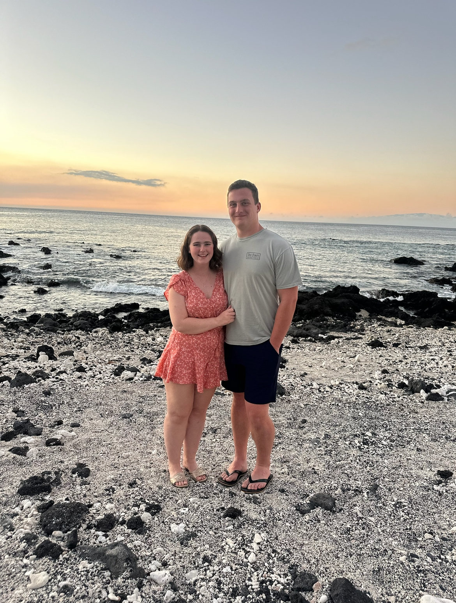

Our StoryHunter and Elizabeth met during the summer of 2023 while Elizabeth was conducting research at Argonne National Labs, not far from where Hunter lived. After dating for the summer, the couple decided to continue to date long distance while finishing out their senior years, Elizabeth at Tufts in Boston, and Hunter at Carnegie Mellon in Pittsburgh. After graduating, Elizabeth moved in with Hunter in Pittsburgh while pursuing her PhD in Statistics and Data Science at Carnegie Mellon. Hunter finished his last year of football for CMU that Fall and transitioned to post-undergraduate life, working as a mechanical engineer at Sargent&Lundy in Cranberry Township, right outside Pittsburgh. The two moved into their first house together in October of 2025. Hunter proposed on New Year's Eve, 2025 during a trip to Chicago with friends. |
 |
The Bridal Party
| Caroline Cucuzzella Maid of Honor |
Taylor Roddy Bridesmaid |
Julia Jenulis Bridesmaid |
Laura Kelly Bridesmaid |
Megan Campbell Bridesmaid |
| Conor Campbell Best Man |
Kevin O'Brien Groomsman |
Dustin Moss Groomsman |
Nick Dziedzic Groomsman |
Ben Dziedzic Groomsman |